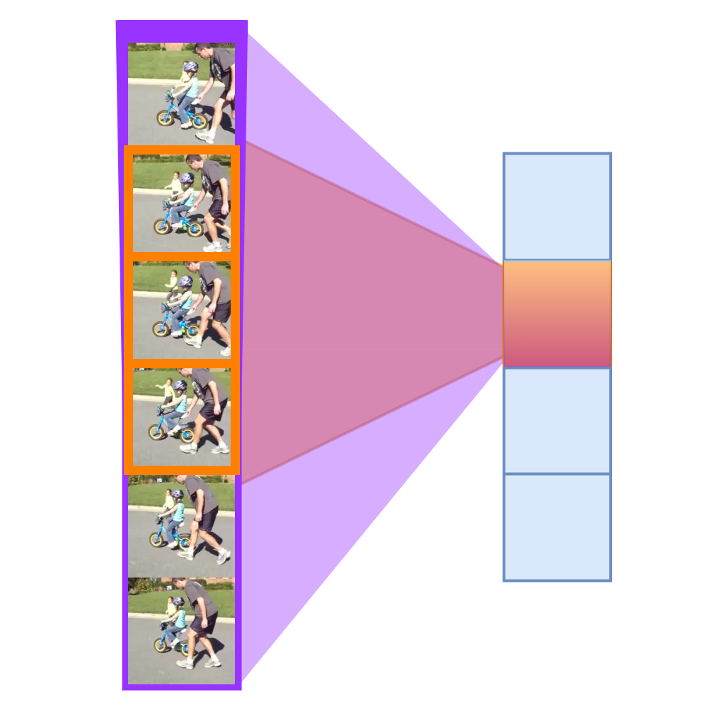
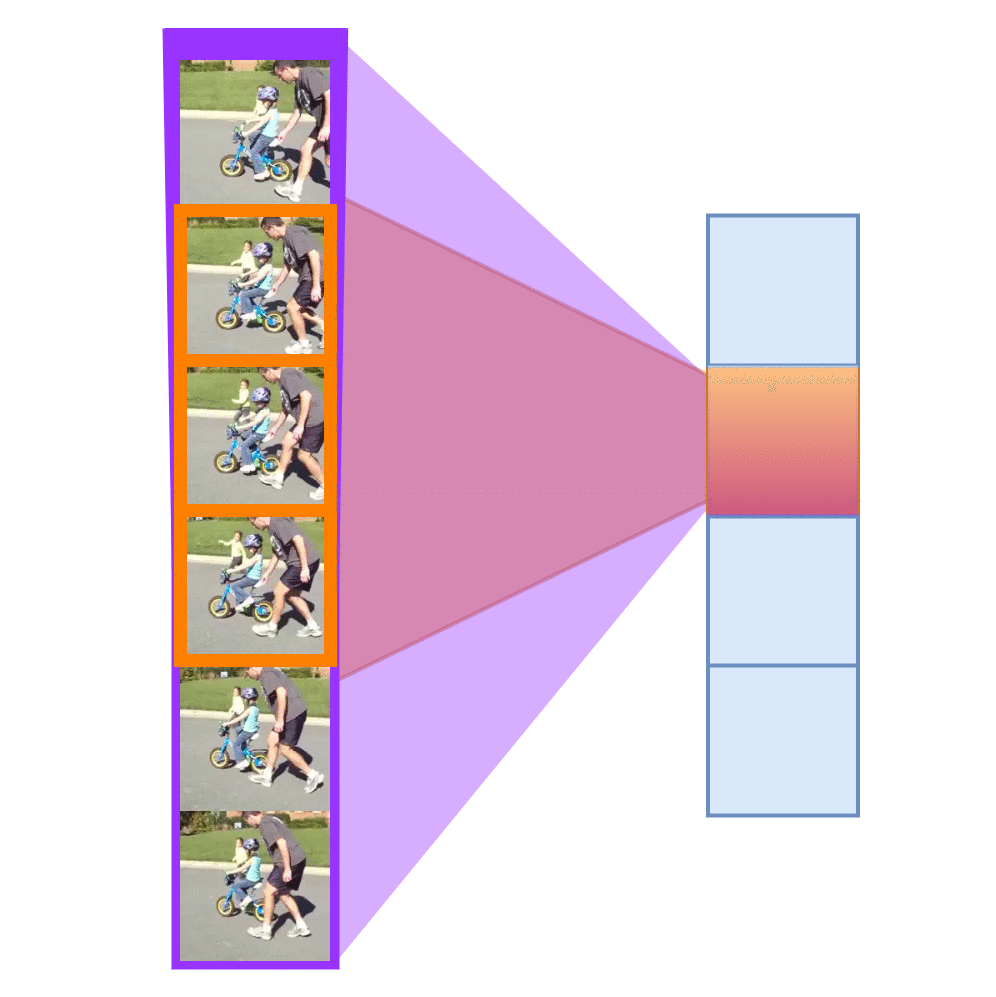
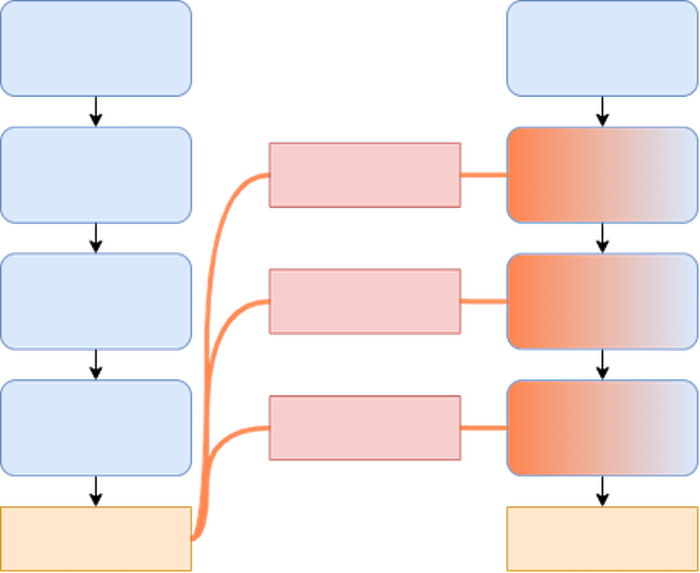
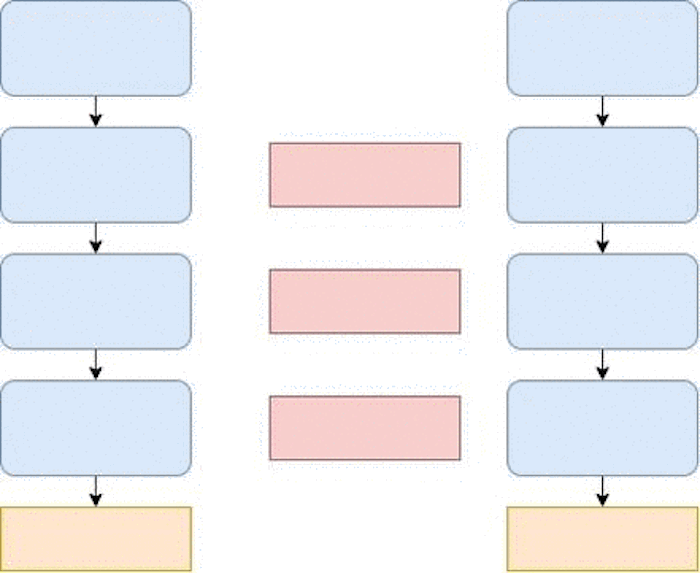
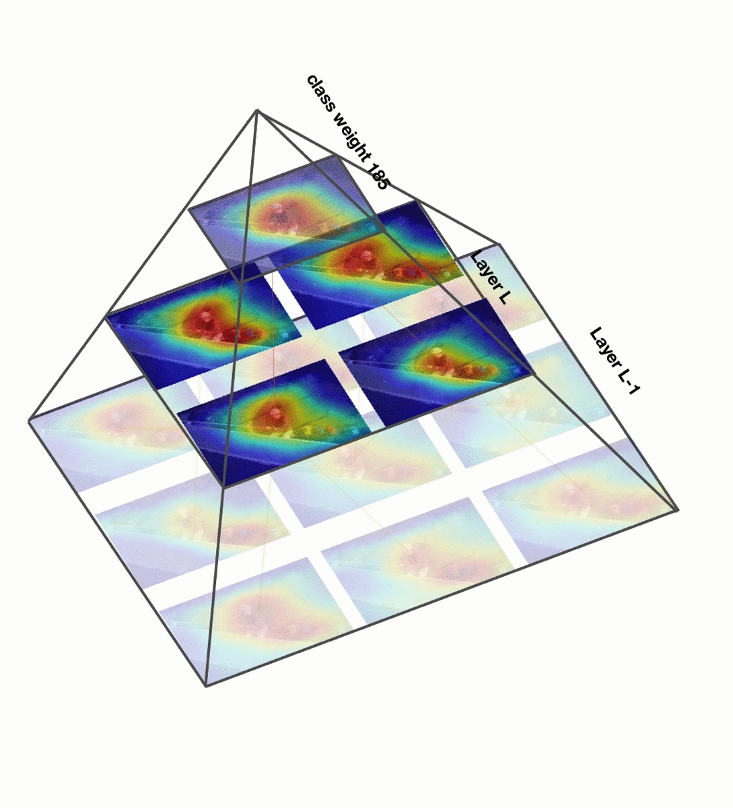
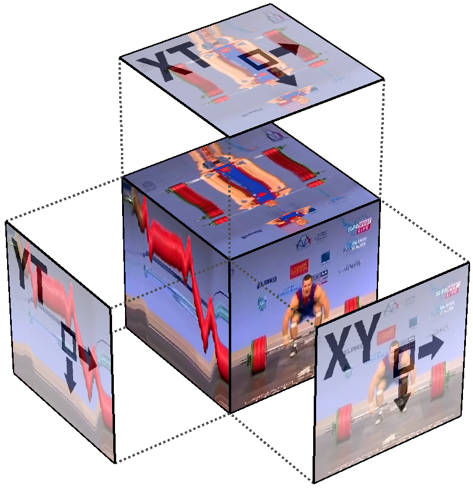
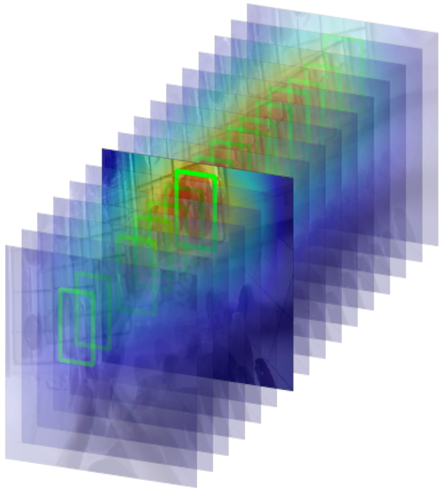
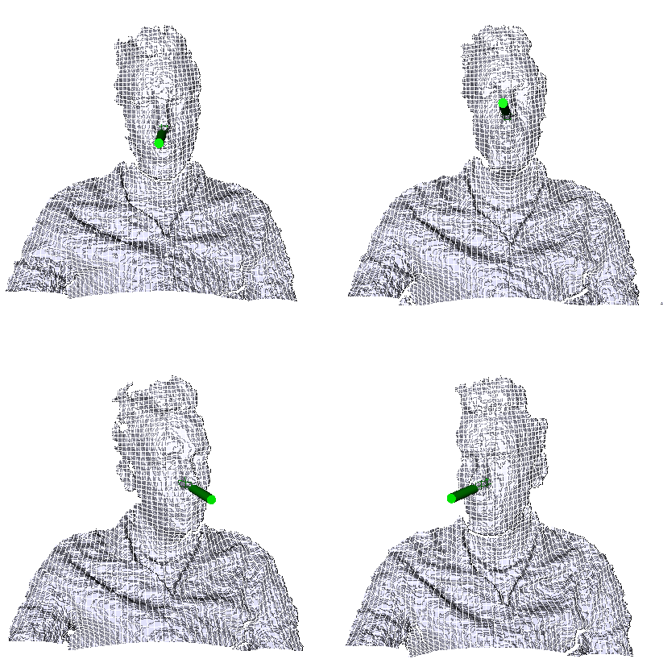

PUBLICATIONS LIST
A full list can be found in my GoogleScholar profile.
|
  |
Learn to cycle: Time-consistent feature discovery for action recognition
Alexandros Stergiou and Ronald Poppe Pattern Recognition Letters, 2020 PDF code doi bibtex |
|
  |
Learning Class-Specific Features with Class Regularization for Videos
Alexandros Stergiou, Ronald Poppe, Remco Veltkamp Applied Sciences, 2020 PDF doi bibtex |
|
 
|
Class Feature Pyramids for Video Explanation
Alexandros Stergiou, Georgios Kapidis, Grigorios Kalliatakis, Christos Chrysoulas, Intenrantional Conference on Computer Vision Workshop (ICCVW), 2019 PDF code doi bibtex |
|
 |
Spatio-Temporal FAST 3D Convolutions for Human Action Recognition
Alexandros Stergiou, Ronald Poppe Intenrantional Conference on Machine Learning Applications (ICMLA), 2019 PDF doi bibtex |
|
 
|
Saliency Tubes: Visual Explanations for Spatio-Temporal Convolutions
Alexandros Stergiou, Georgios Kapidis, Grigorios Kalliatakis, Christos Chrysoulas, International Confernce on Image Procesing (ICIP), 2019 PDF code doi video bibtex |
|
Analyzing human-to-human interactions: a survey
Alexandros Stergiou, Ronald Poppe Computer Vision and Image Understanding, 2019 PDF code doi bibtex |
|
 |
Conceiving Human Interaction by Visualising Depth Data of Head Pose Changes and Emotion Recognition via Facial Expressions
Grigorios Kalliatakis, Alexandros Stergiou, Nikolaos Vidakis Computers, 2017 PDF code doi bibtex |